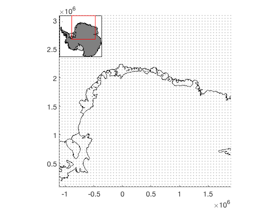
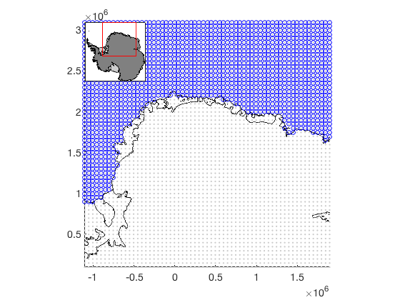
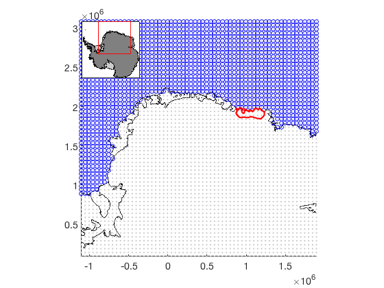
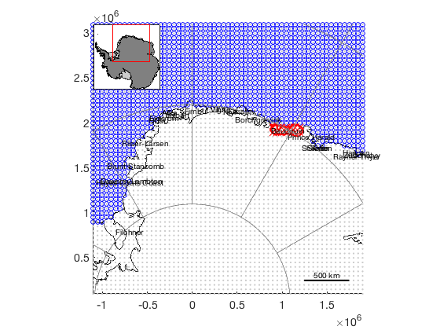
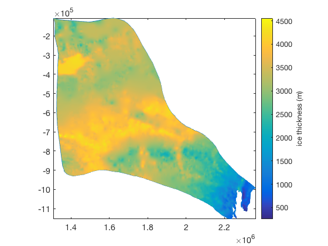

Antbounds Contents and data masking tips
The functions in this plugin for Antarctic Mapping Tools for Matlab are intended to simplify the process of Antarctic data masking and mapmaking. These functions are built on the MEaSURES Antarctic Boundaries for IPY 2007-2009 from Satellite Radar dataset Version 2, which has been kindly provided by Mouginot et al. (see citation below) and is described in full on the NSIDC site here. All necessary data are included in this File Exchange submission, so you don't need to download anything from the NSIDC.
Contents
Data Access
If you have downloaded this toolbox, you have all the data you need. These functions make it easy to import the grounding lines, coast lines, ice shelf outlines, and ice basins into Matlab:
- antbounds_data lets you easily load grounding line, coast, or ice shelf outline data. The grounding line in this dataset is obtained by the same InSAR methods which were used for the measures_data grounding line; however, the antbounds_data is continuous around the continent and represents only a single snapshot in time (2008), whereas the measures_data is discontinous and lets you see grounding line evolution through time.
- basin_data loads IMBIE or IMBIE Refined basins.
Interpolation and masking functions
This toolbox contains five functions which are optimized to load Mouginot et al.'s Mask_Antarctica data and and interpolate to determine whether locations correspond to grounded ice, ice shelves, open ocean, etc. The inbasin function works the same way, and is convenient for limiting your dataset to contain only values within a given ice basin. In my work, I've found these functions and dist2mask have become absolutely invaluable. I hope they're just as helpful for you.
- isgrounded determines whether input coordinates correspond to grounded ice.
- isiceshelf determines whether input coordinates correspond to ice shelf.
- isopenocean determines whether input coordinates correspond to open ocean (no grounded ice, and no ice shelves, but sea ice is considered open ocean).
- isice determines whether input coordinates correspond to any part of the ice sheet, grounded ice or ice shelves. This is the logical NOT of isopenocean.
- istidal determines whether input coordinates are seaward of the landward limit of flexure as measured by InSAR. This is the logical NOT of isgrounded.
- inbasin determines which input coordinates are within a given ice basin.
- dist2mask calculates the distance from any point(s) to the nearest mask type. This can be useful if you want to plot data as a function of distance from the grounding line, or if you have a bunch of mooring data, and you only want to consider the moorings that were collected within some number of kilometers of an ice shelf front. This is similar to the bedmap2_dist function found in the Bedmap2 plugin for AMT.
Data plotting
These functions make plotting pretty easy:
- antbounds simply plots the line data given by antbounds_data.
- labelshelves simply labels the ice shelves plotted by the antbounds function.
- plot_basins plots IMBIE or IMBIE Refined ice drainage basin boundaries.
Tips for data masking
If you're working with a dataset that comes with its own mask (e.g., Bedmap2, RTopo-2, etc.), it might make sense to use the masks associated with those datasets. Otherwise, the logical is* functions listed above are in many cases the easiest to work with. For example, consider this 50 km resolution grid over Dronning Maud Land, which we create with psgrid:
[lat,lon] = psgrid('dronning maud land',3000,50);
Plot the grid, a grounding line, and a coast line for context:
plotps(lat,lon,'.','color',0.8*[1 1 1]) hold on axis tight antbounds('gl','black') antbounds('coast','black') mapzoomps('nw')
To determine which grid points correspond to open ocean, use isopenocean:
ocean = isopenocean(lat,lon);
plotps(lat(ocean),lon(ocean),'bo')
 Perhaps your work is on Baudouin Ice Shelf. Outline it with a thick red line:
antbounds('Baudouin','r','linewidth',2);
How many grid cells correspond to Baudouin Ice Shelf?
baudouin = isiceshelf(lat,lon,'Baudouin');
sum(baudouin(:))
ans =
13.00
Okay, so 13 grid cells correspond to Baudouin Ice Shelf. Plot them in as large red x marks:
plotps(lat(baudouin),lon(baudouin),'rx','markersize',10)
And we can add some junk to the map if we so desire:
labelshelves('fontsize',10) scalebarps('location','se') graticuleps
Never heard of Baudouin Ice Shelf? Well guess how big it is:
[x,y] = antbounds_data('baudouin','xy'); pgon = polyshape(x/1000,y/1000,'Simplify',false); % req's R2017b+ area(pgon)
ans =
33129.24
So 33,000 km^2, or about the size of Moldova. Similarly, we can see how large of an area each major glacier drains using the basin_data function. For example, Totten:
[x_tot,y_tot] = basin_data('imbie refined','totten','xy'); figure plot(x_tot,y_tot) axis image % removes whitespace, sets equal aspect ratio

And Totten drains an area of
pgon = polyshape(x_tot/1000,y_tot/1000,'Simplify',false); % req's R2017b+ area(pgon)
ans =
549820.89
About 550,000 km^2, or about the size of Spain. What's the average ice thickness in the Totten basin? We can load the bedmap2 data surrounding the Totten basin like this:
[lat,lon,thickness] = bedmap2_data('thickness',x_tot,y_tot);
Determine which Bedmap2 grid cells are drained by Totten (takes a few seconds):
totten = inbasin(lat,lon,'imbie refined','totten');
The Bedmap2 dataset is 1 km by 1 km, so the total number of grid cells should be about the same as the drainage basin area we calculated above:
sum(totten(:))
ans =
549838.00
And that looks like we're on the right track. The average ice thickness drained by Totten Glacier is simply
mean(thickness(totten))
ans =
3243.40
About 3.2 km thick.
We can mask out everything except the ice drained by Totten and plot:
thickness(~totten) = NaN;
pcolorps(lat,lon,thickness)
cb = colorbar;
ylabel(cb,'ice thickness (m)')
 Citing this dataset
If you use this dataset, please cite the following:
- The dataset: Mouginot, J., B. Scheuchl, and E. Rignot. 2017. MEaSUREs Antarctic Boundaries for IPY 2007-2009 from Satellite Radar, Version 2. [Indicate subset used]. Boulder, Colorado USA. NASA National Snow and Ice Data Center Distributed Active Archive Center. http://dx.doi.org/10.5067/AXE4121732AD.
- Literature citation: Rignot, E., S. S. Jacobs, J. Mouginot, and B. Scheuchl. 2013. Ice-shelf melting around Antarctica, Science. 341. 266-270. http://dx.doi.org/10.1126/science.1235798.
- Antarctic Mapping Tools: Greene, C. A., Gwyther, D. E., & Blankenship, D. D. Antarctic Mapping Tools for Matlab. Computers & Geosciences. 104 (2017) pp.151-157. doi:10.1016/j.cageo.2016.08.003.
Author Info
This toolbox and supporting documentation were written by Chad A. Greene of the University of Texas Institute for Geophysics (UTIG), November 2016. Updated May 2017 for version 2 of the dataset.